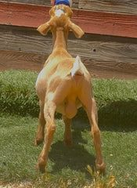
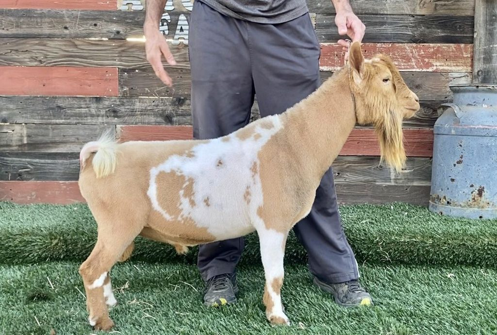
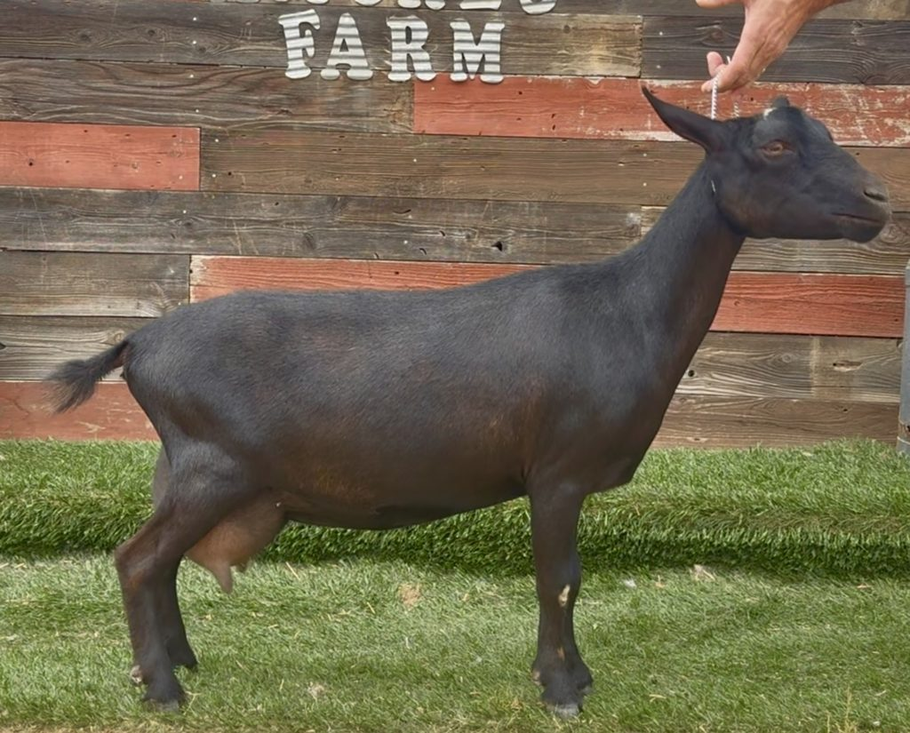
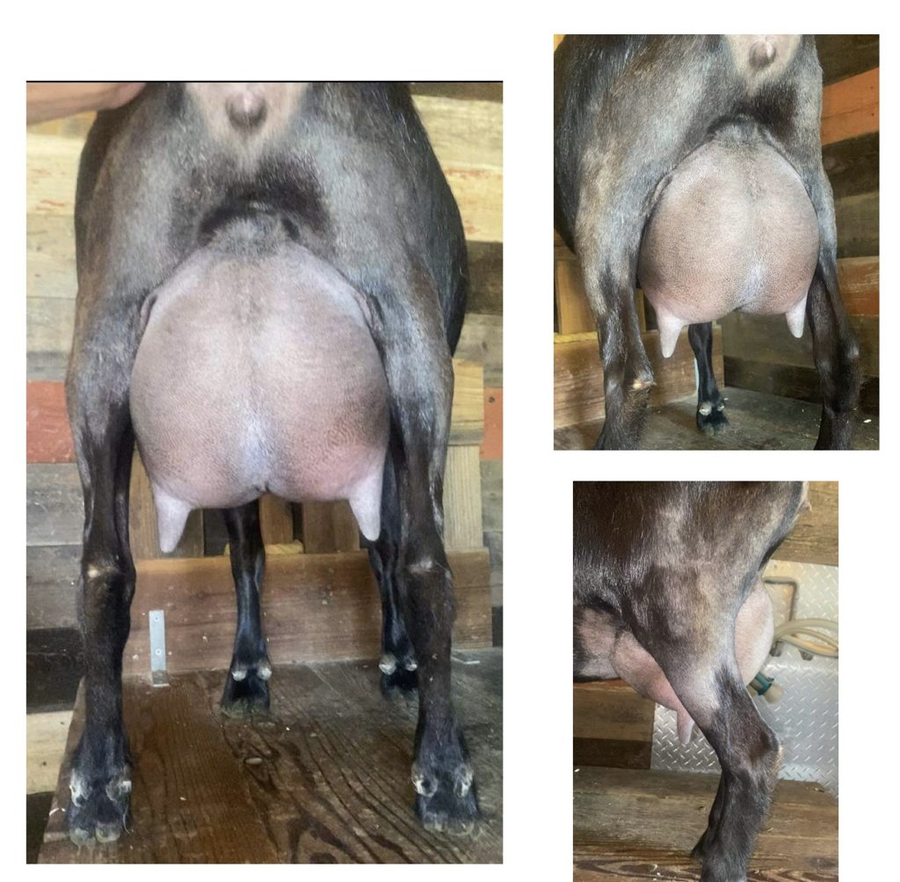

Sire
GCH Amores Farm Kealoha *B VEE89
Buck · Born April 2025
Amores Farm Time Will Tell
Toby’s dam’s sire, Wolfivan CQ Kentucky Bourbon, is a littermate brother to the 2024 ADGA National Champion.


Four generations. View on ADGA Genetics →



Breeding record: which does he has covered, and the kids on the ground.
How Toby handles, how he behaves in rut, what he is like around the herd.